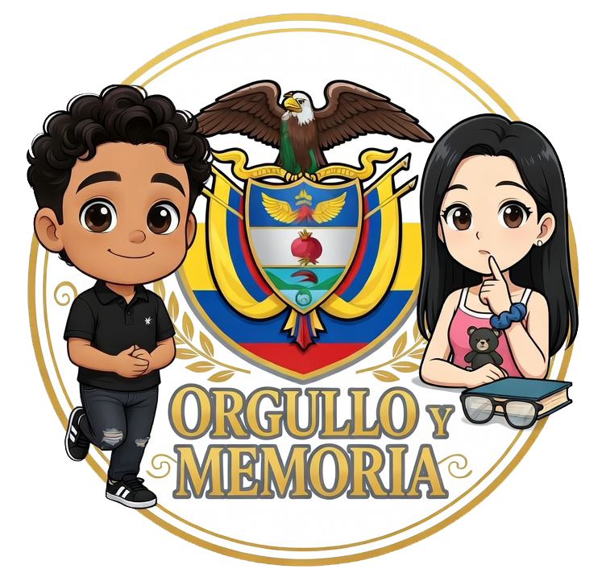
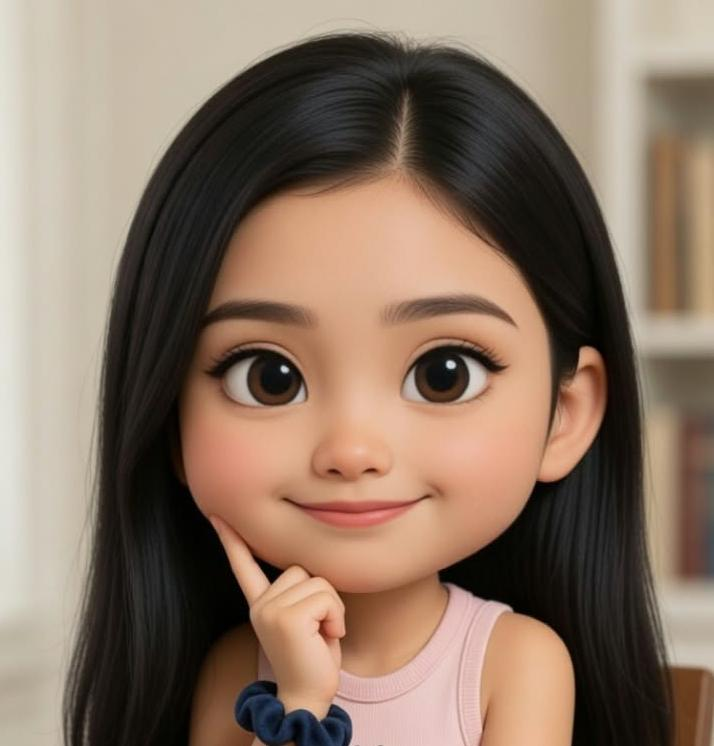
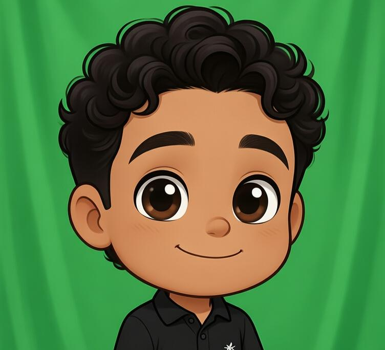
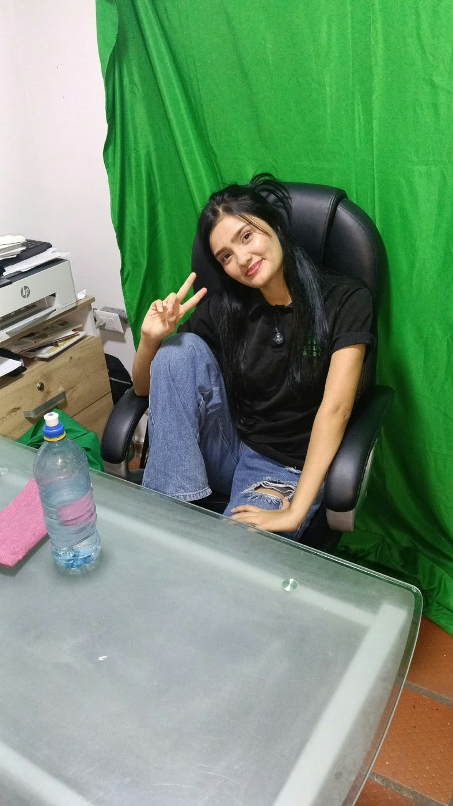
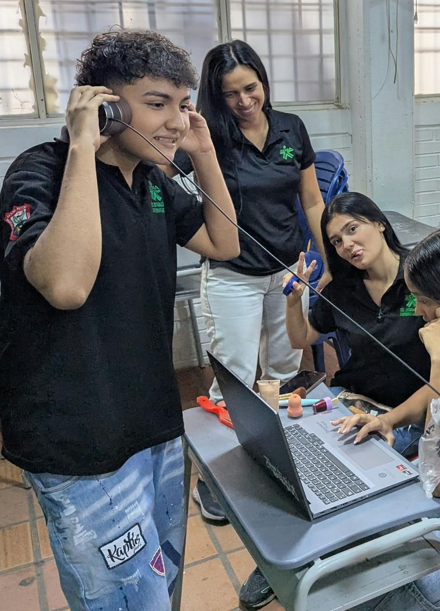
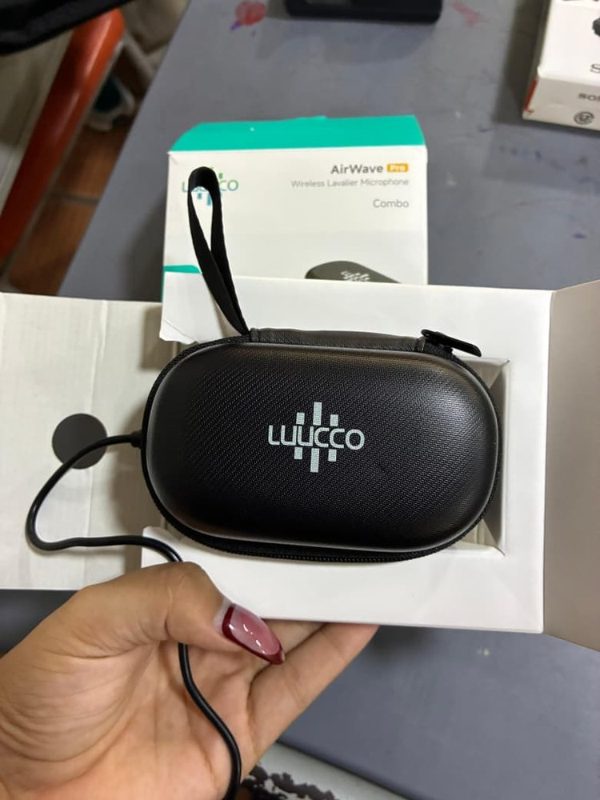
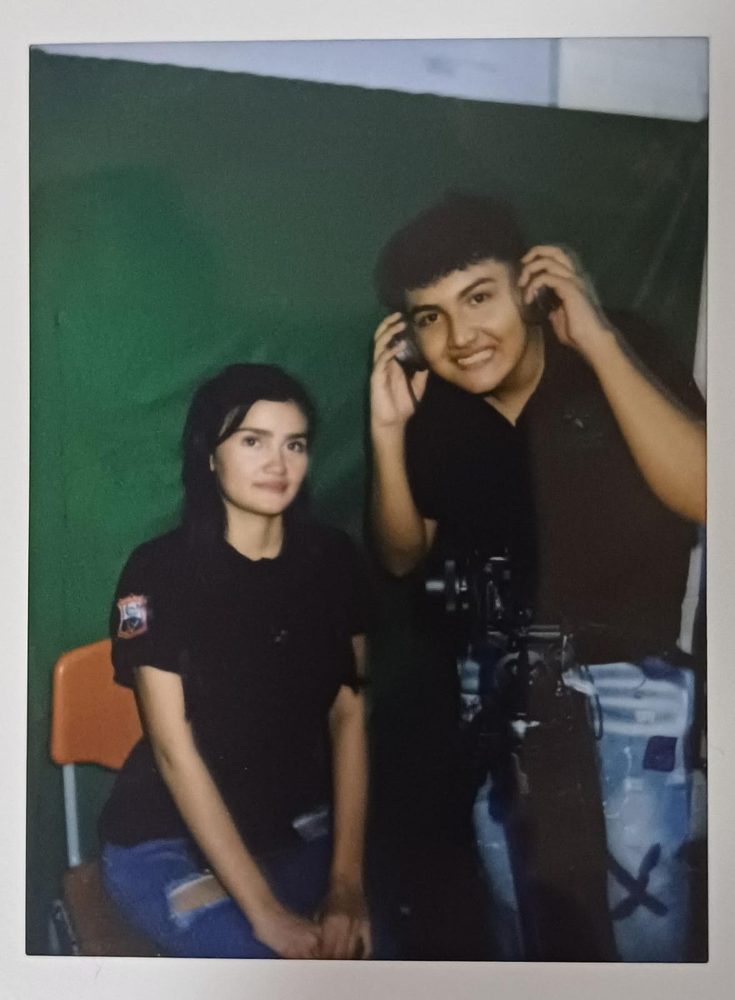

SUSTENTACIÓN DE PROYECTO · SENA / IEDP
Orgullo y Memoria
El canal de YouTube que documenta la historia de Colombia
Técnica en Integración de Contenidos Digitales · Institución Educativa La Divina Pastora · Cúcuta
Expediente 01 — El equipo
Integrantes

- Formación: Estudiante de grado 10°
- Habilidades: Habla en público, carismática, buena oratoria
- Conocimientos: Photoshop, edición de video, escenografía, redacción de libretos, manejo de redes sociales

- Habilidades: Buen manejo de luces y edición de video
- Se encarga de: fotografía, sonido y montaje final de cada episodio
Expediente 02 — El punto de partida
Descripción de la necesidad e idea
🔍 La necesidad
En nuestra institución identificamos la necesidad de fortalecer el aprendizaje con herramientas más dinámicas. Los contenidos tradicionales dificultan captar el interés de los jóvenes y limitan el desarrollo de sus habilidades digitales.
💡 Nuestra propuesta
Un canal de YouTube con mini-documentales históricos que combina investigación, guion y video para que aprender sobre nuestra historia sea más participativo, visual y fácil de comprender.
Expediente 03 — Nuestra propuesta
Idea de solución innovadora
Creamos el proyecto con herramientas digitales fáciles de manejar —editores de video, imagen y animación— para convertir la historia y las ciencias sociales en contenido llamativo, claro y entretenido.
Es valioso porque hace que aprender sea más interesante: en vez de materiales tradicionales, los estudiantes tienen un recurso atractivo que ayuda a entender los temas y, de paso, desarrolla sus habilidades digitales.

Expediente 04 — Hacia dónde vamos
Objetivos
Objetivos específicos
- Identificar los temas o contenidos que se deben transformar en recursos digitales
- Seleccionar y usar herramientas digitales adecuadas para crear videos, imágenes y animaciones
- Elaborar materiales interactivos que motiven a los estudiantes y fortalezcan su comprensión de los temas
Expediente 05 — Por qué vale la pena
Justificación
Este proyecto surge de la necesidad de innovar en los procesos educativos, ofreciendo una forma más dinámica y atractiva de acceder al conocimiento. Aprovechamos las herramientas tecnológicas para transformar los contenidos académicos en recursos interactivos que facilitan la comprensión y fortalecen las competencias digitales — fomentando la creatividad, la motivación y la participación activa de los estudiantes.
Expediente 06 — Nuestra identidad
Misión & Visión
Nuestra Misión
Crear videos entretenidos y didácticos que ayuden a los estudiantes a comprender con más facilidad los temas de historia y ciencias sociales, para que entiendan lo importante que es conocer nuestra propia historia como país.
Nuestra Visión
Llegar a ser un canal reconocido que transforme la percepción de estos temas entre los estudiantes, y apoye a los docentes a enseñarlos de manera más actualizada y con información confiable.
Expediente 07 — Cómo lo hacemos
Tecnologías a emplear

Software de edición, diseño y publicación con el que grabamos, montamos y difundimos cada episodio:
Expediente 08 — Lo que necesitamos
Recursos
Equipos
Computadores y portátiles para la creación de los contenidos digitales.
Internet
Acceso estable para investigar y publicar los materiales.
Software de edición
Canva, CapCut, Filmora y Photoshop para video, imagen y animación.
Cámaras y audio
Celulares de buena resolución, más micrófonos y audífonos para el sonido.
Material de apoyo
Libros, documentos y guías académicas para la investigación histórica.
Espacio colaborativo
Un lugar de trabajo dentro de la institución para grabar y editar en equipo.
🎛️ Equipo técnico disponible
 Cámara Sony + accesorios
Cámara Sony + accesorios

Micrófono inalámbrico Audífonos de monitoreo
Audífonos de monitoreo
Expediente 09 — Lo que vamos a construir
Descripción de productos y servicios
Canal de YouTube
Mini-documentales históricos sobre la región y el país, narrados con guion propio y lenguaje cercano a los estudiantes.
Sitio web
Artículos complementarios, la galería del detrás de cámaras y el archivo de todos los episodios publicados.

Expediente 10 — Nuestra marca
Imagen Corporativa
El rojo, el amarillo y el azul son los colores de la bandera de Colombia: desde el primer segundo avisan de qué va a tratar el canal, porque cualquier colombiano los reconoce. El escudo nacional y el cóndor —símbolos patrios— refuerzan que esta es, ante todo, una historia sobre Colombia.
Expediente 11 — A quién llegamos
Segmento Objetivo
Ubicación
Colombia y todos los departamentos que la conforman.
Perfil
Sin un rango de edad fijo: cualquier persona que quiera aprender nuestra historia, con foco en estudiantes de colegios colombianos.
Ventajas competitivas
Narrativa envolvente apoyada en animaciones, rescate del patrimonio local e investigación con fuentes verídicas.
Expediente 12 — Cómo se hace cada episodio
Proceso productivo
- Investigación bibliográfica y redacción de guiones históricos
- Grabación de la locución en voz en off y búsqueda o creación de material de archivo y animación
- Edición del video documental y diseño de la miniatura en Photoshop
- Publicación en YouTube con SEO y sincronización con el sitio web
Expediente 13 — Nuestra identidad visual
Paleta de colores y estilo
Los colores de la bandera de Colombia sobre un fondo de archivo nocturno: la estética de un expediente histórico, con tipografía condensada en mayúsculas para los títulos.
Expediente 14 — Presupuesto compartido con Academia Sonora
Informe de costos y gastos
Expediente 15 — Balance del proyecto
Informe de ganancias o pérdidas
❤️ Valor pedagógico
La verdadera ganancia de este proyecto no es económica: es que la historia de Colombia —esa que debe ser escuchada y recordada— llegue a los estudiantes y a la comunidad en un formato cercano, hecho por y para jóvenes, en el canal de YouTube.
🌱 Continuidad y futuro
Orgullo y Memoria nace con vocación de permanencia: la idea es que este proyecto no muera aquí, sino que se convierta en un espacio que continúen futuras generaciones e iniciativas del área de Ciencias Sociales de la institución.
GRACIAS POR SU ATENCIÓN
¡Gracias!
Orgullo y Memoria — la historia de Colombia que debe ser escuchada y recordada.
Técnica en Integración de Contenidos Digitales · SENA, IEDP La Divina Pastora.